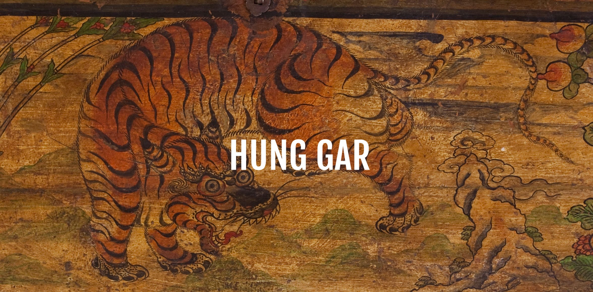
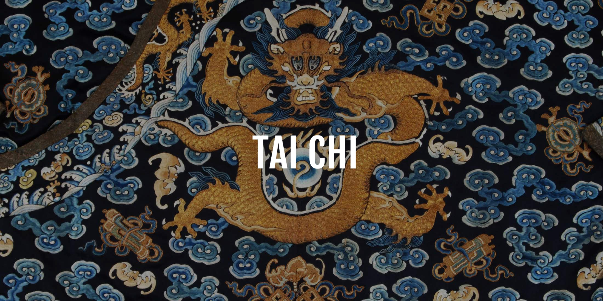

Kung Fu Tradizionale
Stile Hung Gar, dallo Shaolin del sud della Cina. Forme, tecniche di combattimento e armi tradizionali.
Sanda
L'espressione del kung fu nel combattimento sportivo: calci, pugni e proiezioni.

Tai Chi
La “ginnastica di lunga vita”: equilibrio, respirazione e benessere psico-fisico.